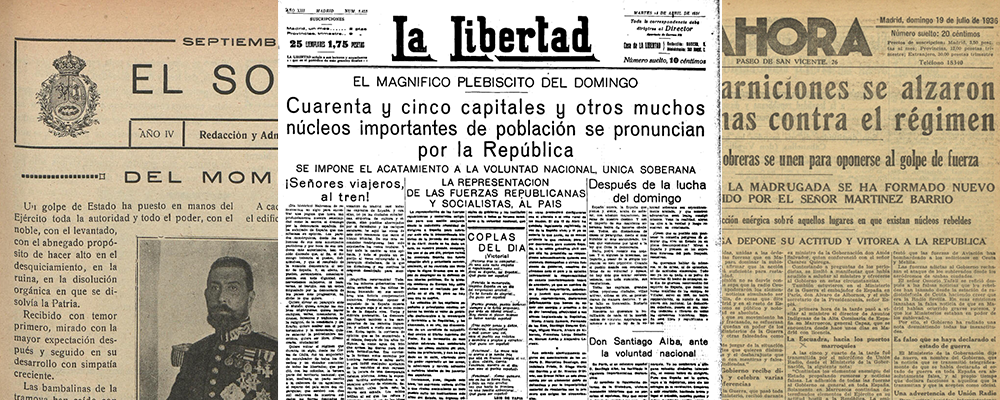
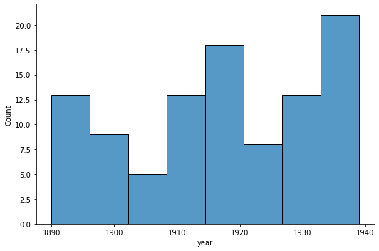
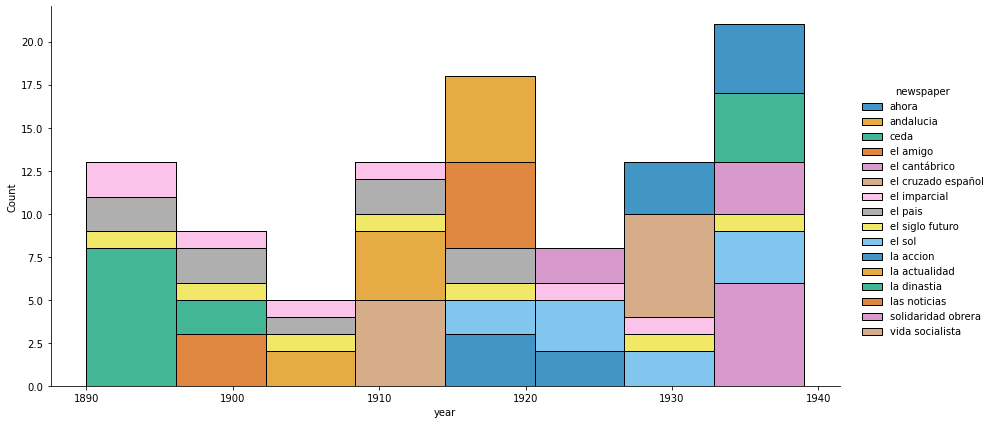
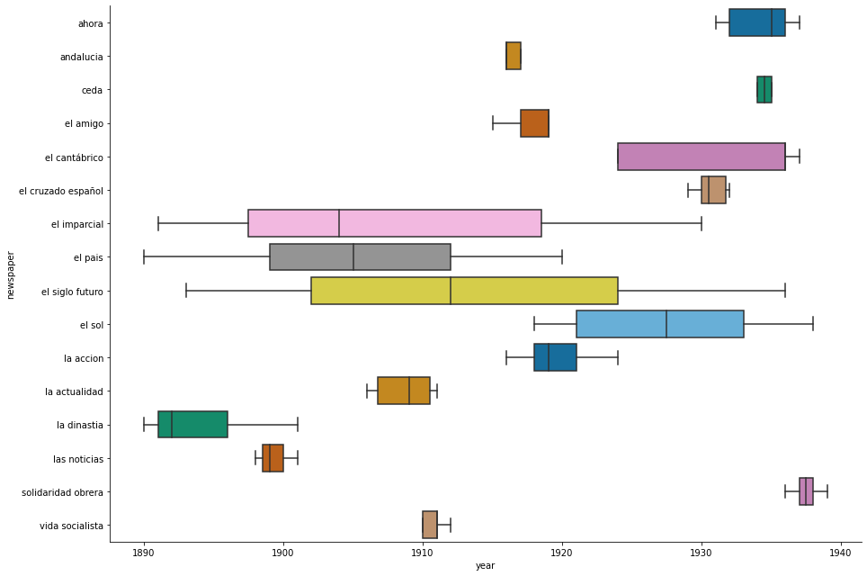
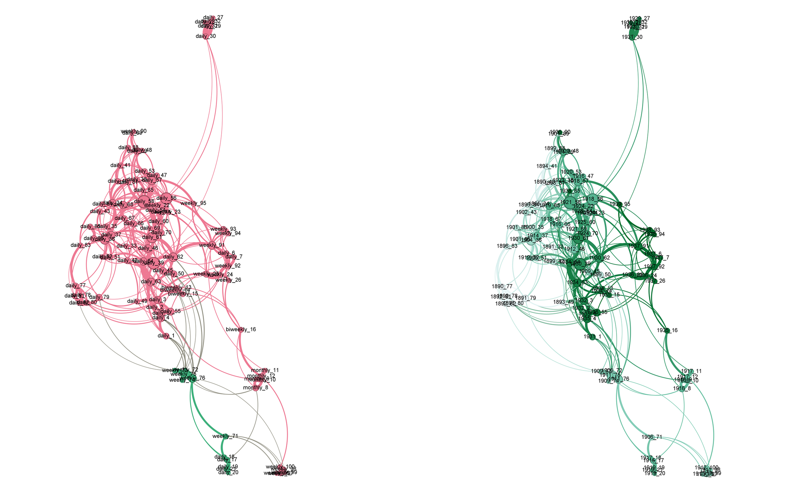

import nltk
import spacy
import os.path
import seaborn as sns
import matplotlib.pyplot as plt
import pandas as pd
from glob import glob41 100 Historical Spanish Newspaper Editions
42 Introduction and Background
Newspapers are the tangible record of the history lived by a society, and their importance lies in the way they observe, describe and record the facts. How do they record reality? How have editorial lines and political trends marked these records? Can we observe these changes of records and trends through a distant observation analysis? Our project wants to provide a dataset of historical Spanish newspaper editions. This dataset should be suitable for tackling our underlying question: What influences newspaper style? (the question will be properly adressed in the final Tool and Methods project.)
The project focuses on Spain because we wanted to work with a non-English dataset. There is a strong focus within the Digital Humanities on English data - understandably, since it is an international field of study. Still, we wanted to provide a different dataset here. The project also focuses on the years 1890 to 1940. This is a subjective selection, but those years were definitely eventful in Spain: The country moved from a monarchy to a monarchy with a dictatorship to a republic, had a civil war, a revolution and then became a dictatorship. We were interested in seeing whether these tumultous events would be visible in newspaper style.

From left to right: “El Somaten”, September 1923, Primo de Rivera’s coup d’etat; “La Libertad”, 14 April 1931, beginning of the Second Spanish Republic; “Ahora”, 19 July 1936, Franco’s uprising and the start of the Spanish Civil War.
Political change through time is obviously not the only thing that could influence a newspaper edition’s style. A language itself changes with time, a newspaper’s staff as well. All of this would mean that time would be feature we wanted to track for our newspaper editions. Another feature would be their ideology: maybe Socialists wrote differently than Conservatives, Anarchists differently from Republicans? Languages are also not monolithic, most have many dialects spoken across a country. Taking this into account, we also wanted to track newspapers’ headquarters and target regions. Another potential feature could be the age of the target audience, as there were many papers aimed specifically at young readers. There are also different kinds of newspapers: some are more concerned with breaking the news, others with providing a regular perspective on things. We therefore also track publication format. And finally, maybe it was not so much the time that articles were written in, but the time when a newspaper was founded that influenced its style? For this, we also tracked our newspapers’ years of foundation.
The features we wanted to track therefore were: - Ideology - Headquarters - Audience - Region - Format - Foundation
We then collected 100 editions of various newspapers spread out as much as possible along these features. Our data and our metadata come from the Digital Newspaper Library of the National Library of Spain (Hemeroteca Digital), where a diversity of newspapers and magazines with different editorial and political lines published from the year 1840 to the year 2022 can be found. The data is also provided under the Creative Commons Attribution 4.0 International licence, meaning we do not need to worry about potential copyright issues.
For further information on this project, please feel free to have a look at its repository, and it its website, were we presented some further analysis.
43 Tutorial
43.1 Collecting the data
Everything started by manually selecting and downloading 100 editions according to their features. This selection also took into account the usability of the available data.
counter = 0
for filename in glob('../data/texts/*.txt'):
counter += 1
print("The dataset contains " + str(counter) + " text files.")The dataset contains 100 text files.The metadata on all text files was stored in a CSV file.
editions = pd.read_csv('../data/editions.csv', index_col=0)
editions.head()| newspaper | year | month | day | link | |
|---|---|---|---|---|---|
| id | |||||
| 1 | ahora | 1931 | 4 | 9 | https://hemerotecadigital.bne.es/hd/es/viewer?... |
| 2 | ahora | 1932 | 4 | 15 | https://hemerotecadigital.bne.es/hd/es/viewer?... |
| 3 | ahora | 1932 | 9 | 16 | https://hemerotecadigital.bne.es/hd/es/viewer?... |
| 4 | ahora | 1935 | 1 | 9 | https://hemerotecadigital.bne.es/hd/es/viewer?... |
| 5 | ahora | 1935 | 11 | 15 | https://hemerotecadigital.bne.es/hd/es/viewer?... |
Metadata not specific to the individual editions - so ideology, newspaper HQ etc. - was stored in a separate CSV file.
newspapers = pd.read_csv('../data/newspapers.csv', index_col=0)
newspapers.head()| ideology | hq | audience | region | format | hq latitude | hq longitude | foundedin | |
|---|---|---|---|---|---|---|---|---|
| newspaper | ||||||||
| ahora | socialist | madrid | adult | national | daily | 40.416.775 | -3.703.790 | 1930 |
| andalucia | regionalist | sevilla | adult | andalucia | monthly | 37.392.529 | -5.994.072 | 1916 |
| ceda | carlist | madrid | adult | national | biweekly | 40400 | -3.703.790 | 1933 |
| el amigo | NaN | madrid | youth | national | daily | 40.416.775 | -3500 | 1915 |
| el cantábrico | socialist | santander | adult | cantabria | weekly | 43.462.774 | -3.805.000 | 1895 |
43.2 Managing the data - cleaning the texts and selection of the appropriate corpus
After selecting and downloading the raw texts from the Hemeroteca Digital of the National Library of Spain, the next step was to clean the downloaded texts. Text cleaning is a fundamental step for the development of the dataset and subsequent analysis, therefore, we invested a lot of hours to build a consistent and clean dataset as much as we could to answer our research question. We strongly recommend investing time to clean the raw data to be used for any project in a mindful way.
In general, the scanned texts were in acceptable reading condition when we collect them. There are two problems though: 1. There were extra spaces in some words, and 2. Certain characters were not recognized by the OCR.
Fixing words with extra spaces manually was not an option because of the amount of data, so we decided to create a function that tries to recompose those words, remove the spaces, and put all the tokens in lowercase. To address the OCR issue instead, we decided to work with a Spanish corpus to remove unrecognized text. An important part of the work was therefore to select which corpus we would work with. After evaluating some available corpora in Spanish, we selected two to test in depth:
- NLTK “cess_esp” corpus was created in 2007 and contains 188,650 words of Spanish which have been syntactically annotated within the framework of the CESS-ECE project (Syntactically & Semantically Annotated Corpora, Spanish, Catalan, Basque). The CESS-ESP was annotated using constituents and functions (with AGTK, University of Pennsylvania). Source: Universal Catalogue
- SpaCy “es_core_news_md” is a free, open-source library for advanced Natural Language Processing (NLP) in Python, it is designed specifically for production use and it helps you build applications that process large volumes of text. During processing, spaCy first tokenizes the text, i.e. segments it into words, punctuation, and so on. This is done by applying rules specific to each language, in our case, we select a Spanish pipeline optimized for CPU. Source: Spacy.io
But how could we quantitatively evaluate which of the corpora best optimizes our future dataset? We decided to select the corpus which would recognize the highest quantity of words in our dataset. For this purpose, we have created a function that, starting from our full dataset, calculates the percentage of tokens recognized by each corpus, and we selected the one with the highest score.
The main differences between NLTK and spaCy are well described in this article.
This function can be applied to any corpus, which makes it flexible for future use. The advantages of applying this method are mainly that it is simple, relatively fast, and that it allows us to maximize the amount of useful data we can work with, which gives us the possibility to carry out a more extensive analysis of our dataset. Its disadvantage is that we cannot be sure of the quality of the result, since not necessarily a greater amount of data (in this case, words) is synonymous with a higher data quality. Despite the limits, we believe that it is useful for our project to carry out this evaluation and that this method can be improved over time and adjusted to the demands, needs, and objectives of the project that decides to make use of it.
# if you don't have the packages below installed you can uncomment the following lines and run the code
#!pip install spacy nltk
#!python -m spacy download es_core_news_mdspacy_es = spacy.load("es_core_news_md")
spacy_es.max_length = 4000000 #Increase the limit of the text that Spacy can work with
nltk.download("punkt")
nltk.download("cess_esp") #Spanish corpus available in NLTK[nltk_data] Downloading package punkt to
[nltk_data] C:\Users\lorga\AppData\Roaming\nltk_data...
[nltk_data] Package punkt is already up-to-date!
[nltk_data] Downloading package cess_esp to
[nltk_data] C:\Users\lorga\AppData\Roaming\nltk_data...
[nltk_data] Package cess_esp is already up-to-date!True#Run this function to read the file
def read_file(filename):
with open(filename, encoding='utf8') as infile:
contents = infile.read()
return contents#Run this function to recompose the words, remove the spaces, and put tokens in lower letters
def retokenize(tokenized_text):
tokenized = []
is_broken_word = False
temp_word = ""
for token in tokenized_text:
token_lower = token.lower()
if len(token) == 1:
if not is_broken_word:
is_broken_word = True
temp_word = token_lower
else:
temp_word += token_lower
else:
if is_broken_word:
tokenized.append(temp_word)
temp_word = ""
is_broken_word = False
tokenized.append(token_lower)
return tokenized#Tokenize all the texts
tokens = set()
for filename in glob('../data/texts/*.txt'):
text = read_file(filename)
tokenized_text = nltk.tokenize.word_tokenize(text)
tokenized_text = set(retokenize(tokenized_text))
tokens = tokens | tokenized_textWe can now run the actual comparison between the two potential corpora.
#Words recognized by each corpus
corpora = {}
words_corpus = {word.lower() for word in nltk.corpus.cess_esp.words()}
corpora["cess_esp"] = {word for word in tokens if word in words_corpus}
doc = spacy_es(" ".join(tokens))
corpora["es_core_news_md"] = {token.text for token in doc if token.has_vector}
#Calculate the percentage of words recognized
for corpus, tokens_recognized in corpora.items():
percent_score = len(tokens_recognized)*100/ len(tokens)
print(f"{corpus} {percent_score}%")cess_esp 4.14768594195563%
es_core_news_md 18.220112791832964%The SpaCy corpus recognises more than four times as many words. We therefore decided to proceed using this corpus. However, up to this point, all the symbols and unrecognised words that come from the OCR are still included in the dataset. We are now going to remove all words that the SpaCy corpus does not recognise. This way, we know that we have only valid words. The trade-off is that we lose some words and all phrase structure, which means that we know that our analysis will be not completely accurate and cannot fully rely on context.
#Run the function to get clean texts
raw_tokens = []
tokens_recognized = []
for filename in glob('../data/texts/*.txt'):
basename = os.path.basename(filename)
new_name = f'texts_clean/{basename}'
text = read_file(filename)
tokenized_text = nltk.tokenize.word_tokenize(text)
tokenized_text = retokenize(tokenized_text)
doc = spacy_es(' '.join(tokenized_text))
raw_tokens.extend([token.text for token in doc])
recognized = [token.text for token in doc if token.has_vector]
tokens_recognized.extend(recognized)
with open(new_name, 'w', encoding = 'utf-8') as fp:
for item in recognized:
fp.write(f'{item} ')We can now also measure the final number of tokens in our dataset.
print(f'Total token: {len(raw_tokens)}')
print(f'Token recognized: {len(tokens_recognized)}')
print(f'Unique raw words: {len(set(raw_tokens))}')
print(f'Unique words: {len(set(tokens_recognized))}')Total token: 2317150
Token recognized: 2000589
Unique raw words: 330459
Unique words: 65875As a last step before we start exploring the data, we will create a single function which we can use to easily combine our metadata and data to load our full dataset.
# Read the file
def text_reader(id):
with open('../data/texts_clean/' + str(id) + '.txt', "r", encoding = "utf8") as file:
text = file.read()
return(text)
# Load editions and newspapers CSVs, add the newspaper data to the editions DataFrame, add the texts
def editions_loader():
editions = pd.read_csv('../data/editions.csv')
newspapers = pd.read_csv('../data/newspapers.csv')
editions = editions.merge(newspapers, on = "newspaper")
editions['text'] = editions['id'].apply(text_reader)
return editions
editions = editions_loader()
editions.head()| id | newspaper | year | month | day | link | ideology | hq | audience | region | format | hq latitude | hq longitude | foundedin | text | |
|---|---|---|---|---|---|---|---|---|---|---|---|---|---|---|---|
| 0 | 1 | ahora | 1931 | 4 | 9 | https://hemerotecadigital.bne.es/hd/es/viewer?... | socialist | madrid | adult | national | daily | 40.416.775 | -3.703.790 | 1930 | fi hombre del porvenir . aquel autómata que ha... |
| 1 | 2 | ahora | 1932 | 4 | 15 | https://hemerotecadigital.bne.es/hd/es/viewer?... | socialist | madrid | adult | national | daily | 40.416.775 | -3.703.790 | 1930 | v hd ? ! ; militar en el paseo de la nota « fi... |
| 2 | 3 | ahora | 1932 | 9 | 16 | https://hemerotecadigital.bne.es/hd/es/viewer?... | socialist | madrid | adult | national | daily | 40.416.775 | -3.703.790 | 1930 | . jefe del estado imponiendo la banda e insign... |
| 3 | 4 | ahora | 1935 | 1 | 9 | https://hemerotecadigital.bne.es/hd/es/viewer?... | socialist | madrid | adult | national | daily | 40.416.775 | -3.703.790 | 1930 | / ' « . concentraciones de tropas en y movimie... |
| 4 | 5 | ahora | 1935 | 11 | 15 | https://hemerotecadigital.bne.es/hd/es/viewer?... | socialist | madrid | adult | national | daily | 40.416.775 | -3.703.790 | 1930 | el momento preciso en que cayo derrumbada la t... |
43.3 Exploring the data
In view of the factors we selected for our study, we carried out some analysis on our dataset. It is important to keep in mind here that our dataset is not representative and that we can therefore not make any conclusions about general developments in the Spanish press through this time period - this is simply an exploration of our dataset. First, we looked at how many editions of each newspaper our dataset contains.
editions["newspaper"].value_counts()el sol 10
la dinastia 10
el pais 9
ahora 7
el imparcial 7
el siglo futuro 7
el cruzado español 6
la actualidad 6
solidaridad obrera 6
andalucia 5
el amigo 5
el cantábrico 5
la accion 5
vida socialista 5
ceda 4
las noticias 3
Name: newspaper, dtype: int64We can see that El Sol and La Dinastía both have ten editions and El País is a close second with nine, while CEDA and Las Noticias are last. Next, we had a look at how many editions of each ideology the dataset contains.
editions["ideology"].value_counts()liberal 20
socialist 17
carlist 17
conservative 15
republican 9
anarchist 6
regionalist 5
Name: ideology, dtype: int64A fifth of all editions in the dataset are Liberal, then come Socialists, Carlists and Conservatives. We then looked at when our editions were published.
Let’s look at which years our dataset contains editions for.
sns.displot(x='year', height=5, aspect=1.5, data=editions, palette = "colorblind");
We can see that the editions are clustered around the beginning and end of our time period, as well as around the end of the 1910. There are much less editions from 1900 to 1910 and the early 1920s. We then examined the ideology of our editions through time shown in various outputs. The first graph illustrates the ratio of the ideology of the editions throughout the time period in question and in each individual period.
ideology_year = editions
ideology_year["ideology"] = pd.Categorical(ideology_year["ideology"], [
"anarchist",
"socialist",
"republican",
"liberal",
"conservative",
"regionalist",
"carlist"
])
sns.histplot(data = ideology_year, x = "year", y = "ideology", palette = "colorblind");
We can see that Conservative editions strongly dominate in the beginning, but Socialist editions are stronger towards the end. Regionalist and Anarchist papers are only present for the years before 1920 and 1940, respectively. The next two plots These two plots show the spread of specific newspapers’ editions throughout the timeperiod of our dataset.
sns.displot(editions, x ="year",hue='newspaper', height=6,aspect=2, multiple='stack', palette="colorblind");
sns.catplot(data=editions, x="year", y="newspaper", height=9,aspect=1.5, kind="box", palette="colorblind");
In summary, we can see that are large differences between the ideologies and newspapers present in our dataset. Ideologies are more represented in different time periods, Conservative editions are for example stronger in the early time period, while Anarchist papers are more represented towards the end. Newspapers also existed in different periods and are also present for very different lengths of time, with some spanning nearly the entire dataset, while others are only present for a few years.
43.4 Analysing the data
NB: The Stylo tutorial will be added in a later version in the Data Analysis section.
For our analysis of the dataset, we decided to use Stylo. For this, we created different subcorpora based on the different features we want to analyse. It is important that the visualisations are as clear as possible, in that sense the colouring plays an essential role. By creating subcorpora from the main corpus, we can colour all editions belonging to the various features in the various analyses the same.
With this in mind, the analysis started by inputting the plain text and choosing the Spanish language from the Stylo parametres. The parameter for the Most Frequent Words was set to 500 MFW, and as for the words we did not want to be included in the analysis, the culling parameter was set to min=max=20, meaning that a given word has to appear in at least 20% texts. Also, for the analysis, pronouns were excluded as well. In the statistics section, for the corpus at hand, the best exploratory method was Multidimensional Scaling, and for having the most precise result among similarities between texts, Elder’s Delta was chosen since Spanish is such an inflected language. No sampling was performed.
All Stylo data was then visualised using Gephi.

On the left, individual editions of newspapers cluster together fairly strongly, though to various degrees. For example, all editions of Vida Socialista are the closest to each other, while some editions of La Dinastía are spread out fairly widely. This could be a result of actual stylistic differences, but errors in OCR and token recognition are probably the most likely cause. You can also see the different degrees of these newspapers, represented by the size of the nodes. It seems that stylistically, editions of El Sol and El Imparcial had most editions similar to them, as they have the highest degrees. This fits with descriptions of both as being influential newspapers in this period.
On the right, the main format cluster is obviously formed by newspapers with a daily publication cycle. Only a few non-daily newspapers are even close to the main cluster.

On the left, the centre of the main ideology cluster is formed by Liberal, Republican or Conservative newspapers. Anarchists, Socialists or Carlists are on the margins, especially in the case of El Cruzado Español on the top right. Interestingly, the other Carlist newspaper CEDA is located rather close to Anarchists and Socialists. There are also two non-political newspapers, shown here as “nan”, which are the ones aimed at youth audiences. They are both completely separate from the main cluster.
On the right, the centre of the main headquarters cluster is formed by newspapers located in the Spanish capital of Madrid. A ring of publications set in Barcelona, Spain’s second city and the capital of Catalonia, surrounds it. One newspaper set in Cantabria’s Santander is well-connected to the main cluster, while the single Andalusian newspaper headquartered in Sevilla is completely separate from the rest. A possible explanation for this could be that Barcelona was such an important city that its newspapers were still written for a national base, but separate enough due to the different location to be recognisably different from the Madrid ones. Santander’s style could not be that much of an influence, while the Andalusian accent is famously strong, suggesting a stronger influence.

On the left, in the audience analysis, the two newspapers aimed at a youth audience are completely separate from the main cluster, similar to the ideology analysis.
On the right, editions in the main cluster are ordered from an earlier to a later year of publication, from the left to the right.
Overall, we can’t offer a conclusive answer to the question of what influences newspaper style. However, we can offer a few conclusions from our analysis of the dataset:
The main cluster of our network was made up of daily newspapers, seated in Madrid, with a middle-of-the-road political ideology and a national adult audience. The closer to the centre of the main cluster and the larger the degree of the newspaper edition, the closer it is to this model. Clusters outside of that were made up of newspapers differing in various features, some only in one, some in several.
For ideology, there does not seem to be a strong stylistic difference between middle-of-the-road ideologies. More extreme ideologies seem to be located at the edges or completely separate from the main cluster.
The target audience seems to be a feature influencing the style particularly strongly, as both non-adult newspapers are completely separate from the main cluster.
Editions are also completely ordered according to publication year, suggesting a strong underlying influence.
44 Active Learning Exercises
44.1 Update the DataFrames
Given the breadth of resources there is the possibility to update the newspapers data with more newspapers editions, and possibly adding columns with additional information useful to understand Spanish journalistic culture (i.e. name of the journalists). At the moment, there does not seem to be the possibility of downloading the web page via html, but if the National Libary of Spain were to change the structure, the process of downloading the various editions could be automated.
Download additional newspaper editions from the Hemeroteca Digital, clean them up using Python and add related information to the DataFrame.
# Your code44.2 Explore the DataFrames
We decided to work with separate datasets because we figured it was tidier this way, but to better visualise you will probably want to have a single DataFrame with all the information. Using our previously defined “editions_loader” function, we have loaded this DataFrame for you here.
editions = editions_loader()Time to create interesting data visualisations! The task is yours, be creative. As an inspiration: how many samples for each ideology? Is there one you should amend by adding samples?
# Your code44.3 Come up with interesting research questions
Being that this dataset lends itself well to the use of tools such as Stylo and Gephi, one might come in touch with interesting discoveries in the changing of writing styles over time or ideologies (i.e. Which factor influences the style of a newspaper the most? Can you think of other features to add to the dataset?). To do so, we advise you to rename the files each time with the feature you want to investigate, like this: ideology_id, audience_id etc.
# Your code45 References
Bird, S., Klein, E., & Loper, E. (2009). Natural language processing with Python: analyzing text with the natural language toolkit. “Reilly Media, Inc.”
Hemeroteca Digital. Biblioteca Nacional De España. hemerotecadigital.bne.es/hd/es/advanced.
Honnibal, M., & Montani, I. (2017). spaCy 2: Natural language understanding with Bloom embeddings, convolutional neural networks and incremental parsing.